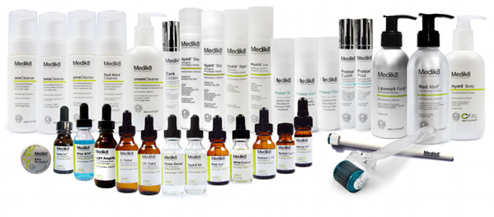

Medik8

Medik8 on kansainvälisesti palkittu, bioteknologiaa hyödyntävä ihonhoitosarja joka on myynnissä vain koulutetuilla ammattilaisilla. Medik8 valmistaa ainoastaan ammattimaisen tehokkaita tuotteita, joiden tulokset ovat tieteellisesti todistettuja. Ne ovat suunniteltu erityisesti ikääntyvälle iholle, aknen hoitoon, punoittavalle iholle, hyperpigmentaation hoitoon sekä kuivalle iholle.
Medik8 uskoo:
Tärkeisiin ja tutkittuihin anti-age ainesosiin, kuten Retinoliin, C-vitamiiniin, AHA - ja BHA -happoihin sekä epidermiksen
kasvutekijöiden sekä aurinkosuojan käyttöön.
Medik8 Peelinghoidot
Medik8 kemiallinen kuorinta antaa silminnähtäviä hoitotuloksia moniin eri tarpeisiin, silti palutumisaika hoidosta on korkeintaan
muutamia päiviä.
Valittavananne on useita ainutlaatuisia happoyhdistelmiä, joista hoitaja valitsee juuri sinun ihollesi optimaalisen vaihtoehdon.
- age Peel tehokas happoyhdistelmä siloittaa ryppyjä ja juonteita sekä häivyttää ihon virheitä
- eye Peel erittäin hellävarainen mutta tehokas kuorinta silmienympärysrypyille ja silmäpusseille
- white Peel poistaa tummentuneita pigmenttiläiskiä ja estää uuden syntyvän solukon tummumisen
- beta Peel auttaa nopeasti saamaan aknen hallintaan ja ehkäisee arpien muodostumista
- Jessner edistyksellinen kuorinta,joka on suunniteltu kuorimaan koko orvaskesi. Pitkäkestoisia ja silminnähtäviä hoitotuloksia ihovaurioihin ja arpiin